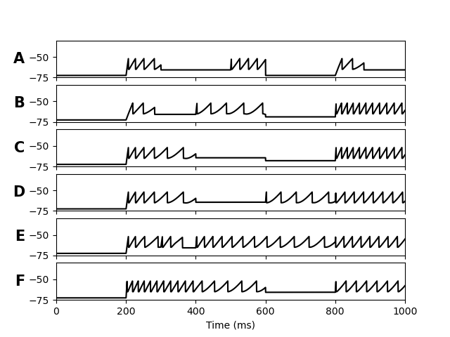
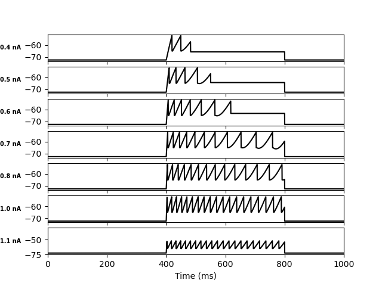
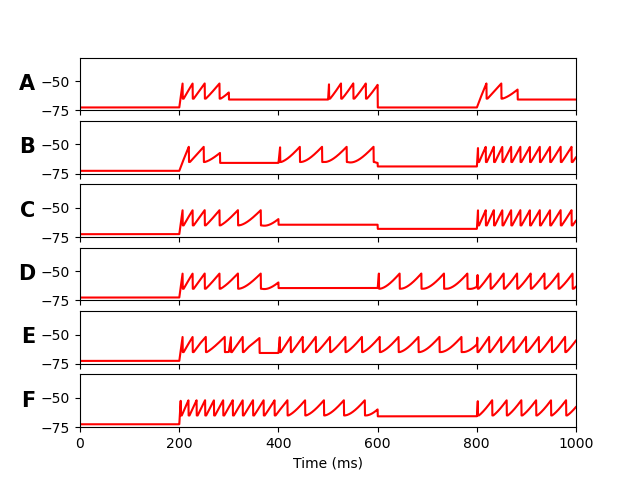

NEST patch and python files for the model: Addolorata Marasco, Emiliano Spera, Vittorio De Falco, Annalisa Iuorio, Carmen Alina Lupascu, Sergio Solinas and Michele Migliore. An Adaptive Generalized Leaky Integrate-and-Fire model for hippocampal CA1 pyramidal neurons and interneurons.
We propose an adaptive generalized leaky integrate-and-fire model, for hippocampal CA1 neurons and interneurons, in which the nonlinear nature of the firing dynamics was successfully reproduced by linear ordinary equations equipped with nonlinear and more realistic initial and update conditions after each spike event, which strictly depends on the external stimulation current.
Dependencies and installation instructions: follow instructions below.
In order to reproduce Fig. 7 and 8 of the paper run:
python -i Fig7_ModelDB.py
or
python -i Fig8_ModelDB.py
To reproduce the same figures with the NEST model run:
python -i Fig7_ModelDB_nest.py
or
python -i Fig8_ModelDB_nest.py
The scripts will produce the following images:
Fig7 from python code
Fig8 from python code

Fig7 from python-NEST code

Fig8 from python-nest code

Under Ubuntu unix systems:
install cmake and build-essential:
sudo apt install cmake
sudo apt-get install build-essential
install anaconda3 follwoing instructions from:
...
Create a Conda Enviroment following instructions at https://github.com/nest/nest-simulator/blob/master/environment.yml OR
Questions on how to use this model
should be directed to michele.migliore at pa.ibf.cnr.it
Questions on how to modifiy or run this
model should be addressed to smgsolinas at uniss.it